Get Started
Role Center
In order to use LV Base and Invoices, no specific role center is required, because the functionality can be accessed via search pane, whereas printout buttons are embedded inside ribbon under the tab ACTIONS.
Configuration package import
Basic necessary system setup for the use of LV Base and Invoices is created, when applying the configuration package LVI.LVI.STANDARD.
- Click on the button Search for Page or Report...

- Type Config. Packages and select Config. Packages from Pages and Tasks

- Select LVI.LVI.Standard package from list of Config. Packages and press Apply Package. Configuration package ensures the following information:
- Countries/Regions and Country/Region Translations
- Currencies
- Customer, Vendor, Inventory, Bank Account, General Business, General Product, VAT Business, VAT Product Posting Groups
- General and VAT Posting Setup
- Shipment methods
- Source codes
- Post codes for Latvia
- Permissions sets
- Bank Export/Import Setup
- Foreign Payment codes
Permissions Sets
Use of LV Base and Invoices require the following permission sets to be assigned per user or user group: • LV_TRANS_VIEW – designed for viewing list of Transporters and using them in documents • LV_TRANS_EDIT- designed for creating, editing and deleting list of Transporters and using them in documents • LV_FPC_VIEW- designed for viewing list of Foreign Payment Codes and using them in journals • LV_FPC_EDIT- designed for creating, editing and deleting list of Foreign Payment Codes and using them in journals
Pre-requisites
The following information should be completed after importing configuration package:
- Click on the button Search for Page or Report...

- Type Employee and select Employees from Pages and Tasks

- Create new employees who hold the following positions in the company:
a. General Manager
b. Finance Manager
c. Accounting Manager

- Complete No., Name, Surname, Job Title fields

- Click on the button Search for Page or Report...

- Type Company Information and select Company Information from Pages and Tasks
- Complete Company Information by:
a. Entering
i. Name
ii. Address
iii. Post Code
iv. Country
v. Registration No.
vi. VAT Registration No.

a. Selecting General Manager from List of Employees b. Selecting Finance Manager from List of Employees c. Selecting Accounting Manager from List of Employees
In case the Accounting Manager is not selected in Company Information, the in the printouts the Finance Manager data shall appear instead of Accounting Manager.
8. Click on the button Search for Page or Report...
 9. Type Bank Account and select Bank Accounts from Pages and Tasks
10. Enter and complete Bank Account card information by entering:
a. Bank Name
b. Bank Account No.
c. Country Code
d. Currency Code
e. Bank Posting Group
f. Swift Code
g. IBAN
9. Type Bank Account and select Bank Accounts from Pages and Tasks
10. Enter and complete Bank Account card information by entering:
a. Bank Name
b. Bank Account No.
c. Country Code
d. Currency Code
e. Bank Posting Group
f. Swift Code
g. IBAN
Click on the button Search for Page or Report...

Type Payment Journals and select Payment Journals from Pages and Tasks
Complete Payment journal batch by: h. Assigning Bank account as Balancing Account Type i. Assigning Bank Account No. as Balancing Account No.
Click on the button Search for Page or Report...

Type Accounting Period and select Accounting Periods from Pages and Tasks
Create New Financial Year in Accounting Period
Setup
Registration number
Registration number is a field added in Customer card and Vendor card. It does not require any additional setup and is used for entering and storing the information. It is possible to setup registration number check for customers in Sales &Receivables Setup by selecting an option:
- None- registration number is not controlled; two or more customer cards may exist with the same customer company registration number
- Message – the system gives a message, if a user is entering a registration number for a customer that already exists in the system
- Error – Customer Company Registration number is required to be unique for customer cards It is possible to setup registration number check for vendors in Purchase & Payables Setup by selecting an option:
- None- registration number is not controlled; two or more vendor cards may exist with the same vendor company registration number
- Message – the system gives a message, if a user is entering a registration number for a vendor that already exists in the system
- Error – Vendor Company Registration number is required to be unique for Vendor cards
Transporters
Each company may keep a list of transporters, where it includes vehicle and driver information for its own transport or external service provider transport. After creating Transporter cards, it is possible to use them in Sales, Purchase and Transfer document.
Click on the button Search for Page or Report...

Type Transporter and select Transporters from Pages and Tasks
Press New, in order to create New Transporter card
The following information can be entered in the transporter card: • Code - internal code for particular Transport Company • Name, Surname - for Individual Service providers or particular Driver • Vehicle Reg.No.- for vehicle registration number • Company Name- for Corporate Service providers • Company Reg. No.- registration ID for Corporate Delivery Service providers or personal ID for Individual Delivery Service providers • Company address - legal address of the Delivery Service provider
Banks
By applying LVI.LVI.Standard configuration package, the Bank Export/Import Setup shall be modified by adding the particular payment export and bank statement import formats. The following information should be filled in Bank Account Card, in order to ensure successful payment file export and bank statement import: • Payment Export Format- LV_SEPA_EXPORT • Bank Statement Import Format- LV_SEPA_IMPORT
Foreign Payment Codes
By applying LVI.LVI.Standard configuration package, the most often used incoming external payment code list shall be created and available for immediate use:
- Click on the button Search for Page or Report...

- Type Foreign Payment Codes and select Foreign Payment Codes from Pages and Tasks

- In case it is required create new additional codes for external incoming payments, press New in list of Foreign Payment codes and complete following fields: • No.- define the number for the foreign payment code in accordance to Non-bank statistics report requirements • Name - short description of the Foreign Payment Code
Currency Exchange Rate Import
By applying LVI.LVI.Standard configuration package, Currency Exchange Rate Services are created in the system with all required setup and need to be enabled. In order to enable the Currency Exchange Rate Service proceed with following steps:
Click on the button Search for Page or Report...

Type Currency Exchange Rate Services and select Currency Exchange Rate Services from Pages and Tasks
Select ECB-EXCHANGE-RATES from Currency Exchange Rate Services and press Enable.
Document Printouts
Document printout does not require any additional setup and can be accessed from the following places: • Sales Order • Sales Invoice • Sales Prepayment Invoice • Posted Sales Invoice • Sales Return Order • Sales Credit Memo • Posted Sales Credit Memo • Transfer Order • Posted Transfer Shipment • Purchase Return Order • Posted Purchase Credit Memo • Customer Balance Reconciliation Document • Vendor Balance Reconciliation Document • Phys. Inventory Document • Transfer Invoice • Inventory Write-Off Document • Posted Inventory Write-Off Document • Fixed Asset Card • Fixed Asset Commissioning Document • Fixed Asset Phys. Inventory Document • Fixed Asset Disposal Document
Advance statement report
By applying LVI.LVI.Standard configuration package, Vendor templates and Vendor Posting Groups are created in the system with all required setup. In order to setup advance holders proceed with following steps:
- Create New Vendor Card for an advance holder
- Use Vendor Templates to apply particular settings
- Review that Vendor Posting Group is set to AVNOR that is used for particular advance holder
- Use Personalization in order to make the field Posting Description available in Purchase Invoice, Purchase Credit Memo
How to use
How to use: Registration number
Registration number is used in preparing bank export files and on document printouts, that are handed out to customers or vendors In order to use the functionality, the following steps are required:
Customer Card - enter Customer Company Registration number 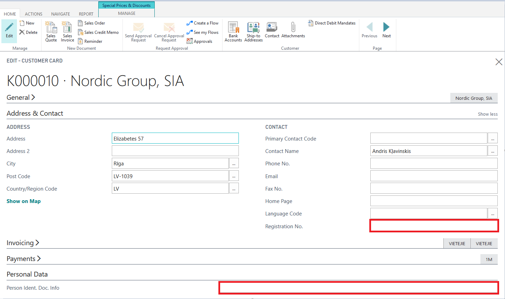
Vendor Card - enter Vendor Company Registration number
How to use: Transporters in Documents
Transporter functionality ensures record keeping for list of transporters with their further use in shipment documents. It is possible to enter own vehicles and drivers, as well as external vehicles, drivers, mentioning the transporting company. Information about transporters is stored in posted documents. Transporters can be specified in the following documents under the fast tab Delivery: • Sales Order • Sales Invoice • Transfer Order • Purchase Return Order Transporter can be selected from the List of transporters in the documents mentioned above by completing Transporter Code. After Transporter Code is selected, the system populates Transporter Person Name, Vehicle Reg. No., Transporter Company Name, Transporter Company Reg. No., Transporter Company Address, that were entered in Transporter Card. If Transporter Code is left blank, then it is possible to enter transporter information manually. When LV Sales Invoice is printed, it is possible to choose whether to print out the transporter information from document either use sender information, or receiver information, or leave the transporter information blank. After the documents have been posted, it is possible to see the Transporter information in: • Posted Sales Shipment • Posted Sales Invoice • Posted Purchase Return Shipments • Posted Purchase Credit Memo • Posted Transfer Shipments
How to use: Banks
Bank functionality ensures:
• possibility to export payment files in ISO format that can be uploaded into Banking Online of commercial banks of Latvia
• possibility to upload bank statement files in ISO format into Business Central
Export Payment File
Purpose: ensures possibility to export payment files in ISO format that can be uploaded into Banking Online of commercial banks of Latvia
Availability: can be accessed from Payment Journal
Pre-requisites: Payment journal batch should have a balancing account mentioned and Allow Payment Export checked.
 In order to use the functionality, the following steps are required:
In order to use the functionality, the following steps are required:
- Create payment lines in Payment Journal
- Particular Export… button is located in the Ribbon under the TAB HOME, in section PROCESS in Payment Journal. 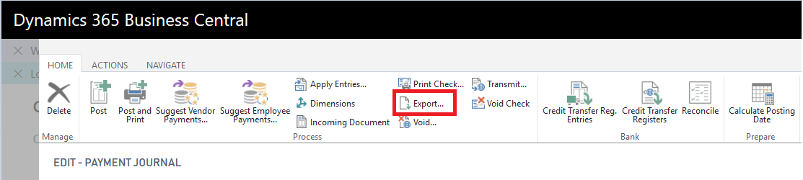
- Save file and upload it to Banking Online for your commercial bank in Latvia (for uploading steps, please require guidance of your specific commercial bank) Import Bank Statement Purpose: ensures possibility to upload bank statement files in ISO format into Business Central Availability: can be accessed from Payment Reconciliation Journal Pre-requisites: Bank Account Card should have Bank Account No. , IBAN, Bank Statement Import Format defined In order to use the functionality, the following steps are required:
- Click on the button Search for Page or Report...

- Type Payment Reconciliation Journals and select Payment Reconciliation Journals from Pages and Tasks 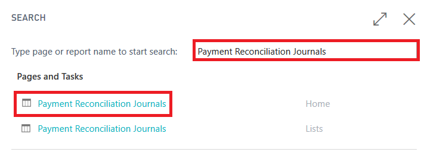
- Press Import Bank Transactions 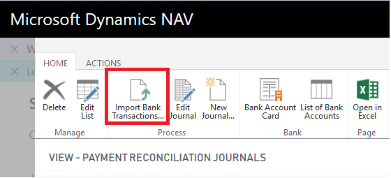
- Press Choose, in order to proceed with selecting the bank statement file for import 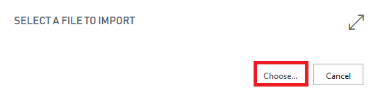
- Proceed with transaction application automatically or manually 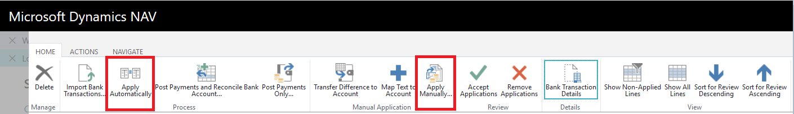
- After all transactions are applied and accepted, proceed with posting payment reconciliation journal 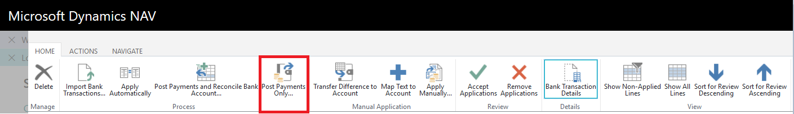
How to use: Foreign Payments
Assign Foreign Payment Code for transaction Purpose: National Bank of Latvia requires to specify foreign payment code for external incoming payments. When posting external incoming payments, a Foreign Payment Code needs to be assigned to particular transaction. Afterwards a Foreign Payment Report can be created. Availability: can be accessed from Payment Journal, Payment Reconciliation Journal Pre-requisites: List of Foreign Payment needs to be completed. In order to use the functionality, the following steps are required:
- Click on the button Search for Page or Report...

- Type Payment Journals and select Payment Journals from Pages and Tasks

- Create a Payment journal line with an incoming payment from a foreign Customer, assign Foreign Payment Code before posting 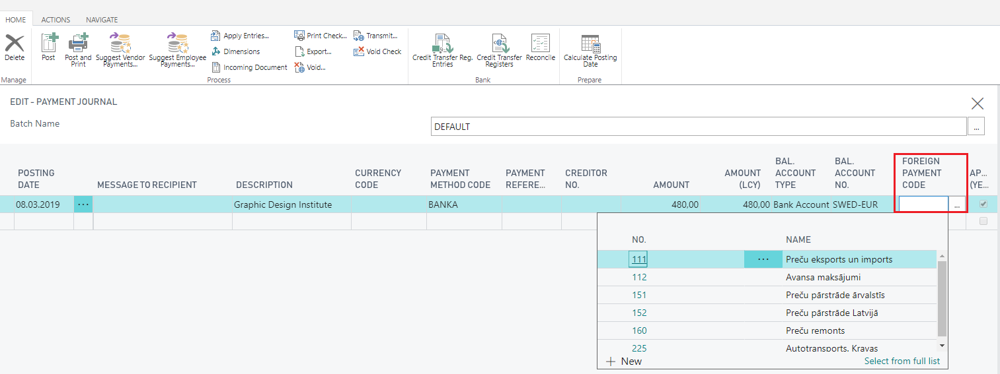 The same steps apply to the use of Foreign Payment Code in Payment Reconciliation Journal. Import bank transactions in Payment Reconciliation journal line with an incoming payment from a foreign Customer, assign Foreign Payment Code before posting.
Prepare Report Foreign Bank Payments 1-IB
Purpose: Foreign Bank Payments 1-IB is used, in order to prepare information for National Bank of Latvia on incoming external payments on a monthly basis. Availability: can be accessed from Search for Page or Report… Pre-requisites: List of Foreign Payment needs to be completed; Foreign Payment Codes needs to be assigned per transaction before it is posted In order to use the functionality, the following steps are required:
- Click on the button Search for Page or Report...

- Type Foreign Bank Payments 1-IB and select Foreign Bank Payments 1-IB from Reports and Analysis

- Define Printing Options
Printing Options: • Year – define year of the report as YYYY • Month – select month for the report from a drop-down list • Company Official – select an employee from the List of Employees, who shall be defined in the report as preparer • Transaction Limit, LCY – set the transaction limit for external incoming payments based on current legislation requirements; all transactions above the limit shall be included in the report Also a filter on bank ledger entries can be applied, when creating the report 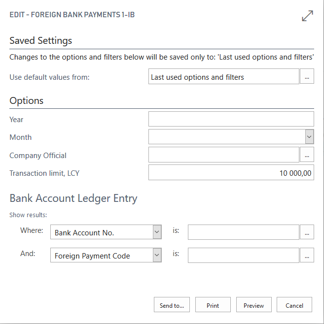 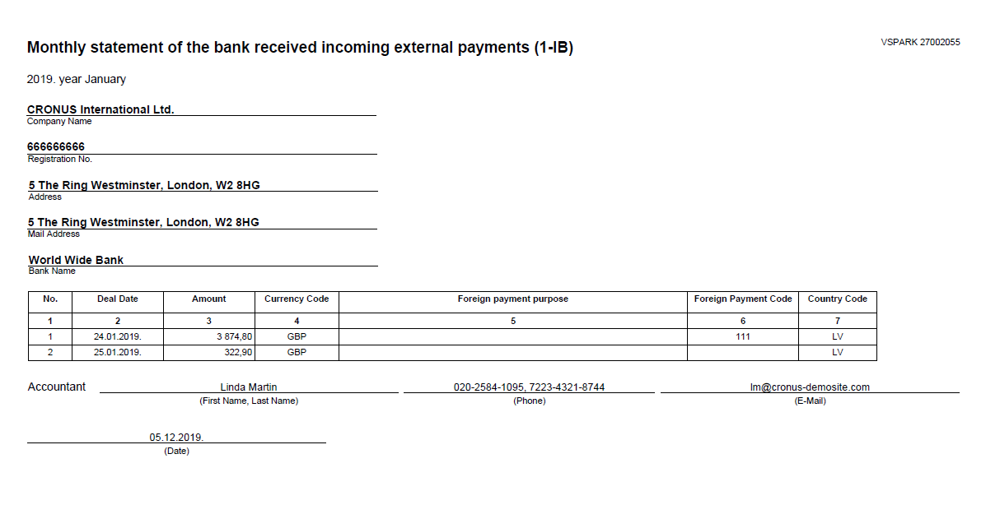
How to use: Currency Exchange Rate Import
Purpose: transactions in foreign currencies are recorded in the system in local currency, based on currency exchange rate. Currency Exchange Rates may be uploaded into system either automatically on a regular basis using a job que entry or manually by user. The source of information is European Central Bank (http://www.ecb.int/stats/exchange/eurofxref/html/index.en.html) The functionality ensures currency exchange rate import for all currency codes for a period of 90 days, for which European Central Bank provides the exchange rate. Other currency exchanges rates for currencies not publish by European Central bank may be entered manually. Availability: can be accessed from List of Currencies Pre-requisites: Currency cards need to be completed with currency code and related standard setup. In order to use the functionality manually, the following steps are required:
- Click on the button Search for Page or Report...

- Type Currencies and select Currencies from Pages and Tasks
- Press Import Currency Rates
- Define Import Currency Rates options Options: • From Date – set the period start date for import • To Date – set the period end date for import (by default is set to today) • Curr.Exch. Rate Update Setup – select the setup code, that was uploaded in the system by LVI.LVI.Standard configuration package ECB-EXCHANGE-RATES
Note: European Central bank publishes currency exchange rates for the day at 15:15 each working day. All foreign currency accounting transactions should be recorded, using currency exchange rate, that is available at the beginning of the current day (published the previous day)- Exchange Rate Amount. If currency exchange rate for current date is available (after 15:15), then the value is displayed in field Adjustment Currency Exchange Rate Amount. Currency reevaluation is done based on Adjustment Currency Exchange Rate Amount at the end of the period. Foreign currency exchange rate amounts are calculated as amount of foreign currency per 1 EUR (1.00 EUR = 1.3317 USD).
How to use: Document Printouts
LV Base and Invoice ensures possibility to create the following printouts in Dynamics 365 Business Central that are compliant with Latvia local legislation requirements: • LV Sales Invoice from unposted sales documents- Sales Order, Sales Invoice • LV Sales Prepayment Invoice from unposted sales documents- Sales Order • LV Sales Invoice from posted sales documents- Posted Sales Invoice • LV Sales Cr. Memo from unposted sales return documents- Sales Return Order, Sales Credit Memo • LV Sales Cr. Memo from posted sales return documents – Posted Sales Credit Memo • LV Purchase Cr. Memo from unposted purchase return documents – Purchase Return Order, Purchase Credit Memo • LV Purchase Cr. Memo from posted purchase return documents – Posted Purchase Credit Memo It is recommended to create printouts mentioned above from Posted documents.
Sales Invoice
Purpose: is prepared for customers for goods shipped or services provided as sales source document. The printout has required data, in order to be treated as source document, procurement document (confirming delivery of goods), service invoice, VAT invoice. Available for printing from: document can be printed from unposted sales documents- Sales Order, Sales Invoice; from posted sales documents- Posted Sales Invoice. Particular Print button LV Sales Invoice is located in the Ribbon under the TAB ACTIONS, in section PRINT. 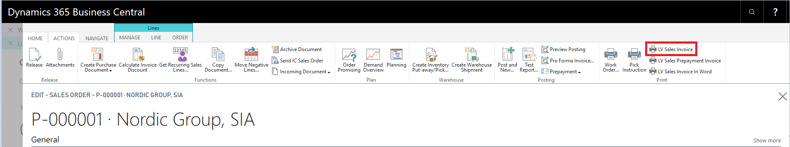
Pre-requisites: Sales Order and Sales Invoice should be in status Released; no pre-requisites for Posted Sales Invoice Printing Options: the following printing options are available for this printout: • Count of Copies – determine how many additional copies should be printed together with original document; any integer can be entered • Service invoice – if checked, then the printout omits information related to delivery of goods (Vendor Delivery Address, Customer Delivery Address), transporter information and has no signature line for the Customer • Print Payer – if checked, then the printout prints the Payer information (Bill-To Customer) in the header of the document below the Customer information. Applies if only the Bill-To Customer differs from Sell-To Customer • Print Transporter - choose whether to print out the transporter information from document either use sender information, or receiver information, or leave the transporter information blank (None) • Print Amount in LCY – used for documents in foreign currency, if checked, then additional section is printed (Total excluding VAT, VAT%, Total including VAT) in local currency of the company • Print Salesperson Name – if checked, then Salesperson name is printed in the signatory part of the invoice; salesperson code should be filled in the document • Print VAT Specification – if checked, then VAT specification is printed (VAT ID, VAT%, VAT Base, VAT Amount) in currency of the document
 When the printing options are selected, it is possible to use standard Send To…, Print, Preview functions.
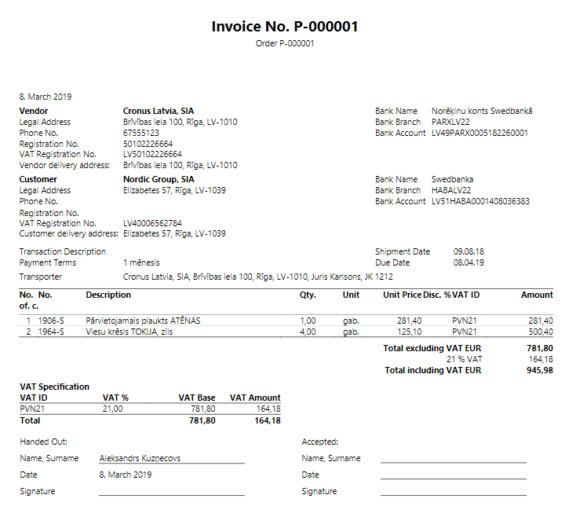
When the printing options are selected, it is possible to use standard Send To…, Print, Preview functions.
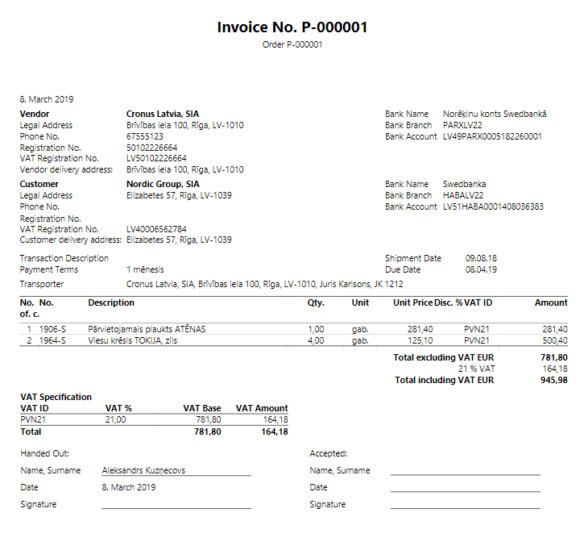
Sales Prepayment Invoice
Purpose: is prepared for customers as a sales prepayment invoice for goods not yet shipped or services not yet provided as sales source document. The printout has all required data for sales prepayment document.
Available for printing from: document can be printed from unposted sales documents- Sales Order.
Particular Print button LV Sales Prepayment Invoice is located in the Ribbon under the TAB ACTIONS, in section PRINT.
 Pre-requisites:
Prepayment % should be completed in Sales Order or Sales Order Lines.
LV Sales Prepayment Invoice should be printed before posting Prepayment Invoice.
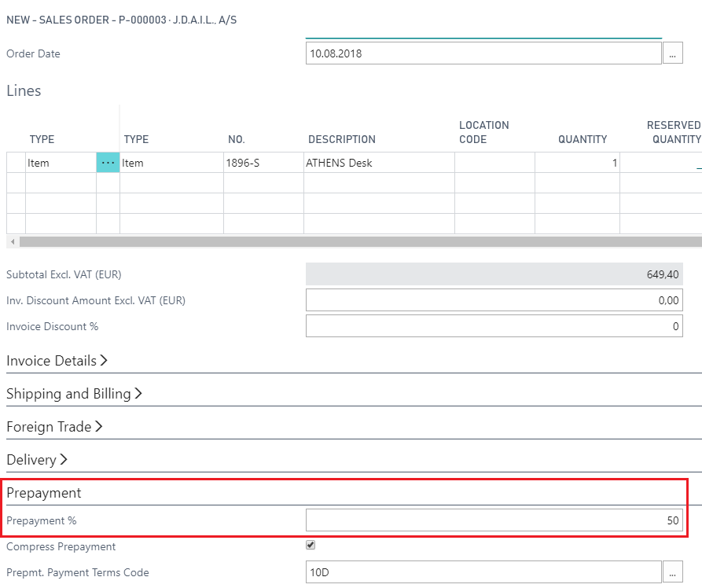
Printing Options: the following printing options are available for this printout:
• Count of Copies – determine how many additional copies should be printed together with original document; any integer can be entered
• Print Payer – if checked, then the printout prints the Payer information (Bill-To Customer) in the header of the document below the Customer information. Applies if only the Bill-To Customer differs from Sell-To Customer
• Print Amount in LCY – used for documents in foreign currency, if checked, then additional section is printed (Total excluding VAT, VAT%, Total including VAT) in local currency of the company
• Print Salesperson Name – if checked, then Salesperson name is printed in the signatory part of the invoice; salesperson code should be filled in the document
• Print VAT Specification – if checked, then VAT specification is printed (VAT ID, VAT%, VAT Base, VAT Amount) in currency of the document
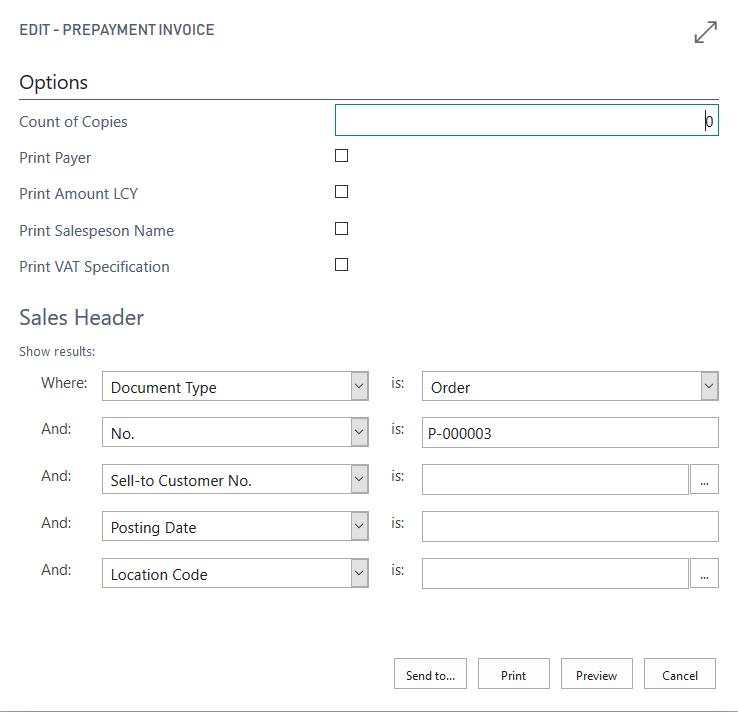
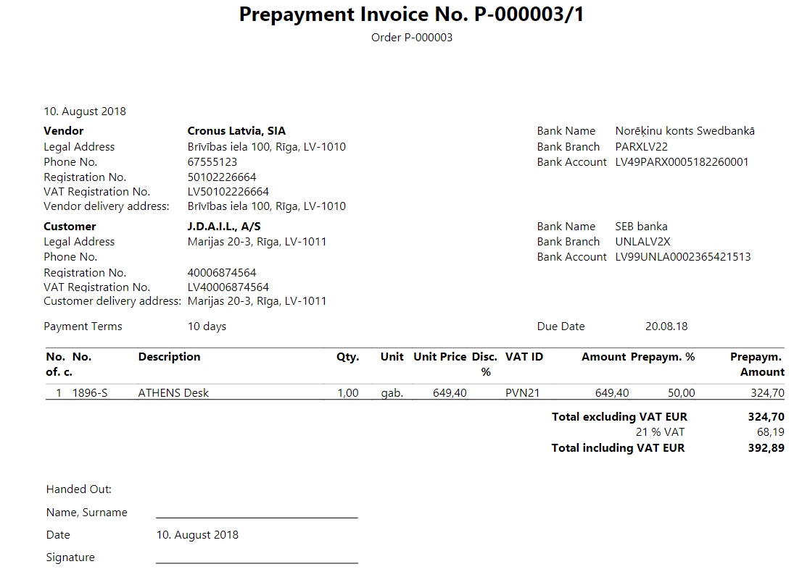
Pre-requisites:
Prepayment % should be completed in Sales Order or Sales Order Lines.
LV Sales Prepayment Invoice should be printed before posting Prepayment Invoice.
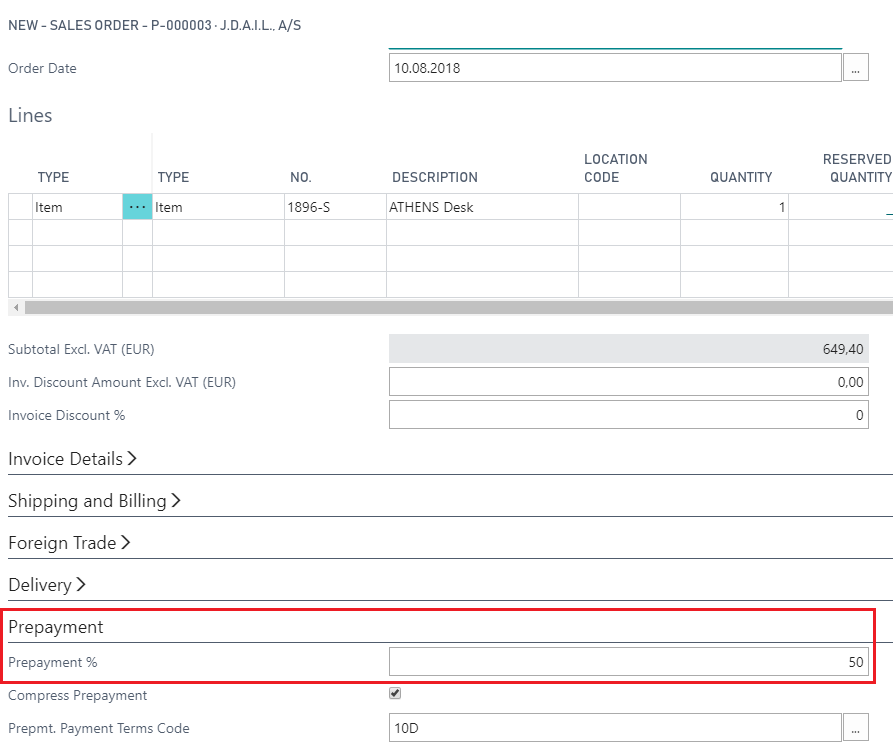
Printing Options: the following printing options are available for this printout:
• Count of Copies – determine how many additional copies should be printed together with original document; any integer can be entered
• Print Payer – if checked, then the printout prints the Payer information (Bill-To Customer) in the header of the document below the Customer information. Applies if only the Bill-To Customer differs from Sell-To Customer
• Print Amount in LCY – used for documents in foreign currency, if checked, then additional section is printed (Total excluding VAT, VAT%, Total including VAT) in local currency of the company
• Print Salesperson Name – if checked, then Salesperson name is printed in the signatory part of the invoice; salesperson code should be filled in the document
• Print VAT Specification – if checked, then VAT specification is printed (VAT ID, VAT%, VAT Base, VAT Amount) in currency of the document
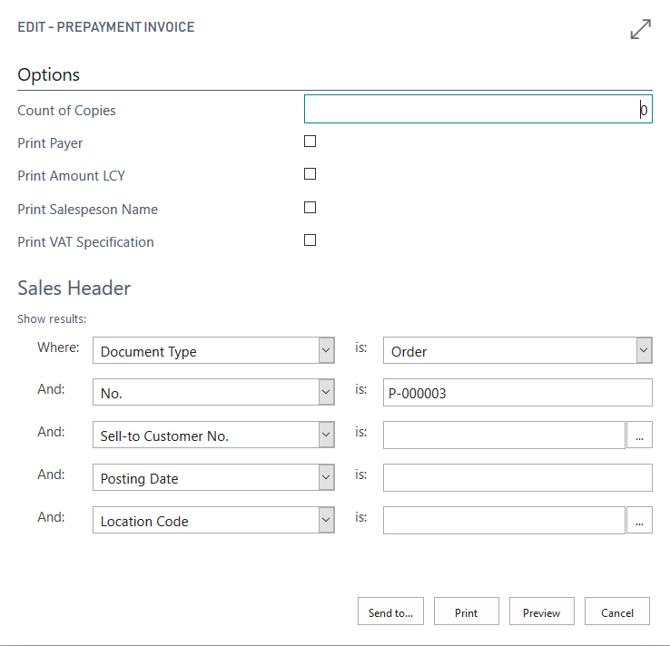
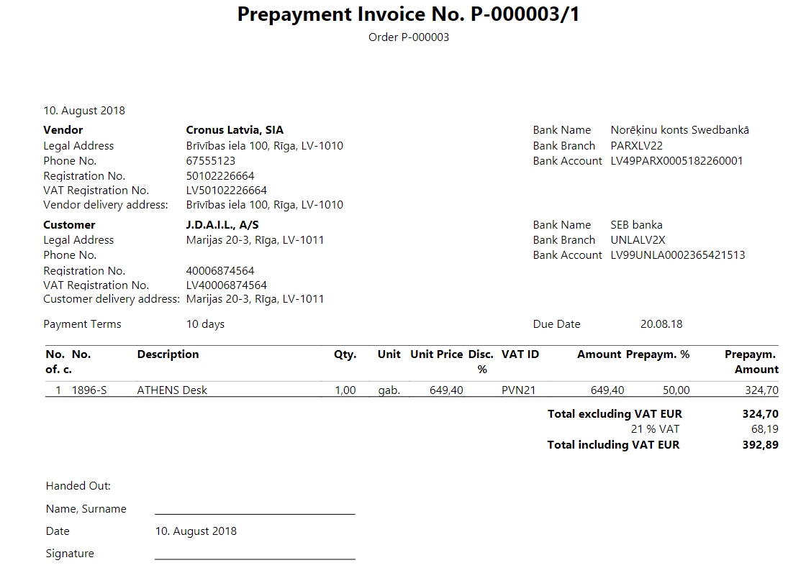
Sales Credit Memo
Purpose: is prepared for customers for goods returned or services cancelled as sales return source document. The printout has required data, in order to be treated as source document, procurement document (confirming delivery of goods), service invoice, VAT invoice. Available for printing from: unposted sales return documents- Sales Return Order, Sales Credit Memo; posted sales return documents – Posted Sales Credit Memo. Particular Print button LV Sales Cr. Memo is located in the Ribbon under the TAB ACTIONS, in section GENERAL in Sales Return Orders. Particular Print button LV Sales Cr. Memo is located in the Ribbon under the TAB ACTIONS, in section PRINT in Sales Credit Memo.
Particular Print button LV Sales Cr. Memo is located in the Ribbon under the TAB ACTIONS, in section GENERAL in Posted Sales Credit Memo.
Pre-requisites: Sales Return Order and Sales Credit Memo should be in status Released; no pre-requisites for Posted Sales Credit Memo. Printing Options: • Count of Copies – determine how many additional copies should be printed together with original document; any integer can be entered • Service invoice – if checked, then the printout omits information related to delivery of goods (Vendor Delivery Address, Customer Delivery Address), transporter information and has no signature line for the Customer • Print Payer – if checked, then the printout prints the Payer information (Bill-To Customer) in the header of the document below the Customer information. Applies if only the Bill-To Customer differs from Sell-To Customer • Print Transporter - choose whether to print out the transporter information from document either use sender information, or receiver information, or leave the transporter information blank (None) • Print Amount in LCY – used for documents in foreign currency, if checked, then additional section is printed (Total excluding VAT, VAT%, Total including VAT) in local currency of the company • Print Salesperson Name – if checked, then Salesperson name is printed in the signatory part of the invoice; salesperson code should be filled in the document • Print Legal Address as Delivery Address – if checked, then legal address is printed instead of delivery address for Customer who is returning the goods • Print VAT Specification – if checked, then VAT specification is printed (VAT ID, VAT%, VAT Base, VAT Amount) in currency of the document
Purchase Credit Memo
Purpose: is prepared for vendors to whom the goods are returned. The printout has required data, in order to be treated as source document, procurement document (confirming delivery of goods), service invoice, VAT invoice Available for printing from: unposted purchase return documents – Purchase Return Order, Purchase Credit Memo; posted purchase return documents – Posted Purchase Credit Memo. Particular Print button LV Purchase Cr. Memo is located in the Ribbon under the TAB ACTIONS, in section GENERAL in Purchase Return Orders.
Particular Print button LV Purchase Cr. Memo is located in the Ribbon under the TAB ACTIONS, in section PRINT in Purchase Credit Memo.

Particular Print button LV Purchase Cr. Memo is located in the Ribbon under the TAB ACTIONS, in section GENERAL in Posted Purchase Credit Memo.
Pre-requisites: Purchase Return Order and Purchase Credit Memo should be in status Released; no pre-requisites for Posted Purchase Credit Memo. Printing Options: • Count of Copies – determine how many additional copies should be printed together with original document; any integer can be entered • Print Payer – if checked, then the printout prints the Payer information (Pay-To Vendor) in the header of the document below the Vendor information. Applies if only the Pay-To Vendor differs from Buy-from Vendor • Print Transporter - choose whether to print out the transporter information from document either use sender information, or receiver information, or leave the transporter information blank (None) • Print Amount in LCY – used for documents in foreign currency, if checked, then additional section is printed (Total excluding VAT, VAT%, Total including VAT) in local currency of the company • Print Salesperson Name – if checked, then Salesperson name is printed in the signatory part of the invoice; salesperson code should be filled in the document • Print VAT Specification – if checked, then VAT specification is printed (VAT ID, VAT%, VAT Base, VAT Amount) in currency of the document
Transfer Invoice
Purpose: Transfer of goods is required to be supported by a delivery note – transfer invoice. The document indicates the quantity and unit costs of goods transferred. Availability: can be accessed from Transfer Order, Posted Transfer Shipment; Particular Print button LV Transfer Invoice is located in the Ribbon under the TAB ACTIONS, in section PRINT.
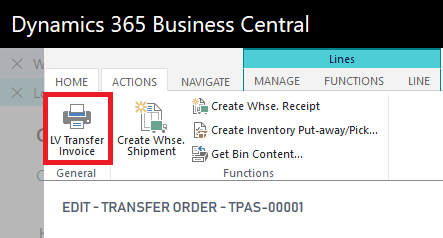
Printing Options: the following printing options are available for this printout:
• No. of Copies – determine how many additional copies should be printed together
• Print Company as Transporter – if checked, then Company details are inserted in Transporter information in the printout
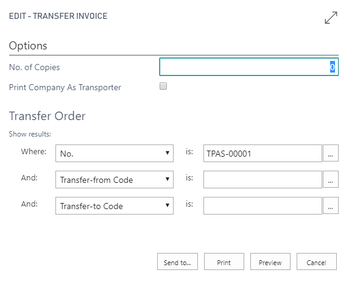

How to use: Advance holders
Purpose: An advance holder is an employee of a company who is accountable for an expense amount that is provided by the organization. Advance holders are created as Vendors with particular Vendor Posting Group. Post Advance Holder Transactions. Advance holder transactions are the procurements made by the Employee, that are considered as company expenses. When a procurement happens, an advance holder reports to the company about the expenditures that were made. Advance holder transactions can be recorded in 2 ways:
- In case all Vendors, from which an advance holder made procurements, are entered in Business Central as Vendors, then per each advance holder transaction a purchase document (purchase invoice, purchase credit memo) is created. Buy-From Vendor is the original Vendor who provided goods or services, whereas Pay-To Vendor is set as Advance Holder. Posting Description field needs to be completed with information describing the deal. 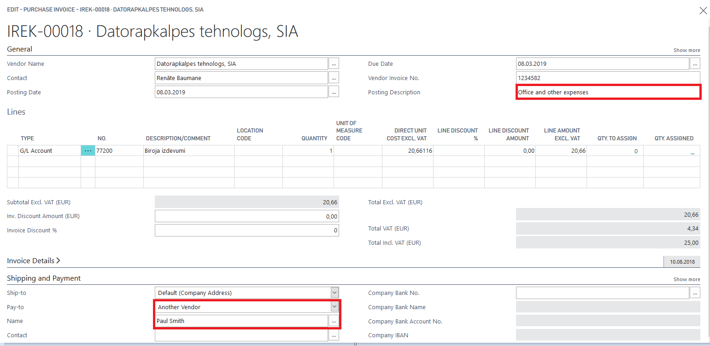
- In case Vendors, from which an advance holder made procurements, are NOT entered in Business Central as Vendors, then per each advance holder transaction a purchase journal entry (purchase invoice, purchase credit memo) is created. Description field needs to be completed with information with original vendor data and information describing the deal.
Prepare Advance Statement Report
Purpose: The company reimburses the employee for the expense amount and controls a balance for each advance holder. Availability: can be accessed from Search for Page or Report… Pre-requisites: Vendor Card with Vendor Posting Group for Advance holders should be created In order to use the functionality, the following steps are required:
- Click on the button Search for Page or Report...

- Type Advance statement report and select Advance statement report from Reports and Analysis
 Printing Options: the following printing options are available for this printout:
• Advance statement No. – enter advance statement number that will appear on the report printout
• Vendor No. – select one particular advance holder from the list of vendors
• Date Filter – set date filter for advance statement period
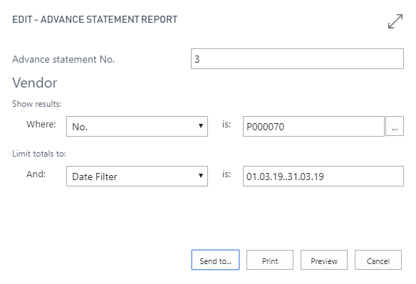
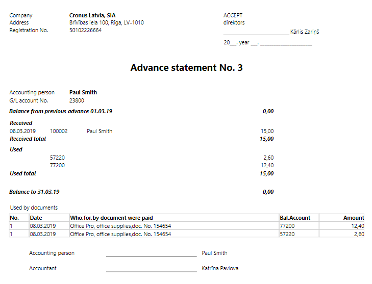
Printing Options: the following printing options are available for this printout:
• Advance statement No. – enter advance statement number that will appear on the report printout
• Vendor No. – select one particular advance holder from the list of vendors
• Date Filter – set date filter for advance statement period
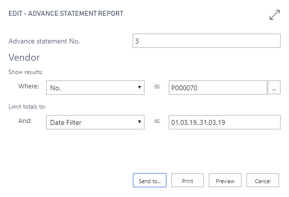
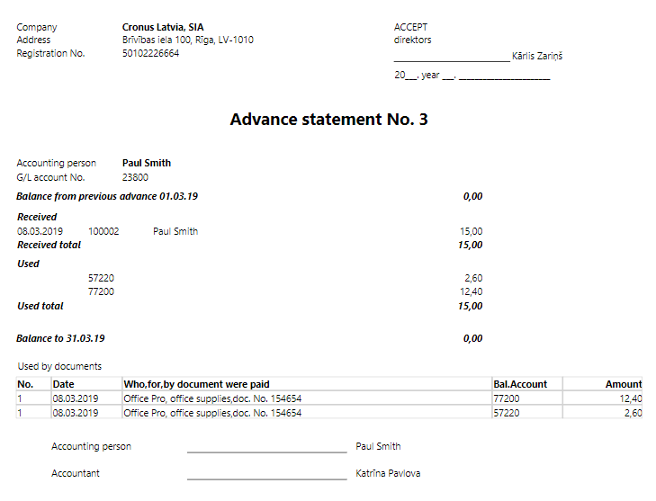
Customer Balance Reconciliation Statement
Purpose: Company may reconcile balances with its customers on regular basis. Availability: can be accessed from Search for Page or Report… Pre-requisites: Customer should have at least one transaction. Printing Options: the following printing options are available for this printout: • Reconcile Date – set date for balance reconciliation • Return Date – set date for the document to be returned to the company • Combine by Registration No. – if checked, then all transactions of one customer with several customer cards is presented in one report, combining them by registration no. • Include Vendor Debts – can be checked, when customer card and vendor cards are linked with the same contact card, then customer and vendor outstanding balances are presented in one report • Print Details – if checked, then detailed open transactions are presented in the report • Print Not Zero Balance – if checked, then report is prepared for all customers with outstanding balance at date • Print Amounts in Currency – if checked, then detailed open transactions are presented in the original currency of the transaction • Issued – an employee from the Employee List should be indicated, who issued the reconciliation document Customer Balance Reconciliation can be prepared by applying customer filter.
Vendor Balance Reconciliation Statement
Purpose: Company may reconcile balances with its vendors on regular basis. Availability: can be accessed from Search for Page or Report… Pre-requisites: Vendor should have at least one transaction. Printing Options: the following printing options are available for this printout: • Reconcile Date – set date for balance reconciliation • Return Date – set date for the document to be returned to the company • Combine by Registration No. – if checked, then all transactions of one vendor with several vendor cards is presented in one report, combining them by registration no. • Include Customer Debts – can be checked, when customer card and vendor cards are linked with the same contact card, then customer and vendor outstanding balances are presented in one report • Print Details – if checked, then detailed open transactions are presented in the report • Print Not Zero Balance – if checked, then report is prepared for all vendors with outstanding balance at date • Print Amounts in Currency – if checked, then detailed open transactions are presented in the original currency of the transaction • Issued – an employee should be indicated, who issued the reconciliation document • Vendor Balance Reconciliation can be prepared by applying vendor filter.
Phys. Inventory Document
Purpose: Company may perform a stock-take on regular basis. Availability: can be accessed from Search for Page or Report… 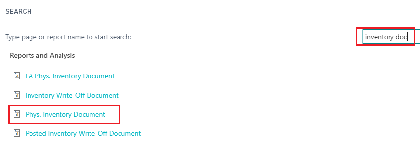 Pre-requisites: The document can be printed only after the Phys. Inventory Journal lines are posted and Adjust Cost-Item Entries job has been successfully executed. Printing Options: the following printing options are available for this printout: • 1. Person.. 5.Person – select employees from List of Employees to indicate the commission who participates in stock-take • Responsible Person- select employee who is financially responsible for keeping the stock accurate • Apply Phys. Inventory Ledger Entry Filters to obtain results of particular stock-take 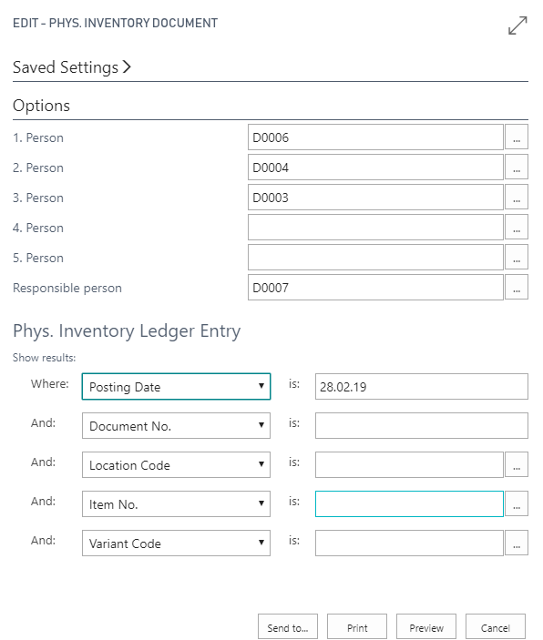 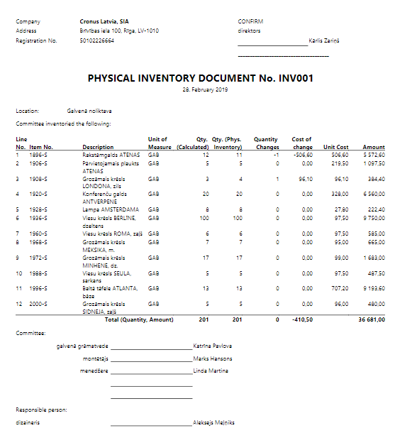
Inventory Write-off Document
Purpose: Inventory Write-off document is used for writing-off goods that shall not be sold and recognized as expenses. Available for printing from: Item Journal. Particular Print button Inventory Write-Off document is located in the Ribbon under the TAB HOME, in section Report
Pre-requisites: Item journal lines with type Negative Adjustment are available in journal not posted
Note: When printing the document from unposted item journal lines, the unit cost may not be actual; therefore it is advised to print Posted Inventory Write-off document, using additional filters on item ledger entry in printing options for Item Ledger Entry
 Printing Options: the following printing options are available for this printout:
• Reason – identify the reason for writing items off
• 1. Person.. 5.Person – select employees from List of Employees to indicate the commission who confirms write-off
Printing Options: the following printing options are available for this printout:
• Reason – identify the reason for writing items off
• 1. Person.. 5.Person – select employees from List of Employees to indicate the commission who confirms write-off


Posted Inventory Write-off Document
Purpose: Inventory Write-off document is used for writing-off goods that shall not be sold and recognized as expenses. Available for printing from: can be accessed from Search for Page or Report… Pre-requisites: Item journal lines with type Negative Adjustment are already posted Note: When printing the document from unposted item journal lines, the unit cost may not be actual; therefore it is advised to print Posted Inventory Write-off document, using additional filters on item ledger entry in printing options for Item Ledger Entry
Printing Options: the following printing options are available for this printout: • Reason – identify the reason for writing items off • 1. Person.. 5.Person – select employees from List of Employees to indicate the commission who confirms write-off

Fixed Asset Card
Purpose: Fixed asset card may be printed that is compliant with local legislation Available for printing from: fixed asset card. Particular Print button Fixed Asset Card is located in the Ribbon under the TAB REPORT, in section General
Pre-requisites: fixed asset card must exist
Printing Options: the following printing options are available for this printout:
• No. – determine fixed asset number for which the document is printed

Fixed Asset Commissioning Document
Purpose: Acquisition of a fixed asset is followed by fixed delivery and acceptance document, confirming the launch of a fixed asset in exploitation.
Available for printing from: fixed asset card. Particular Print button FA Delivery and Acceptance Document is located in the Ribbon under the TAB REPORT, in section General
Pre-requisites: fixed asset is created in the system, all required information is completed. Acquisition process has been completed in Business Central.
Printing Options: the following printing options are available for this printout:
• Depreciation Book- choose depreciation book used, in order to represent the fixed asset value
• Either use:
o Document No.- indicate the number of the document for fixed asset count
o Document Date- set document date for fixed asset count
OR
o No. and Date from FA Ledger Entry – if checked, then Document No. and Document Date need not to be set
• 1. Person.. 3.Person – select employees from List of Employees to indicate the commission who confirms existence of fixed assets
• Filters for Fixed assets may be applied

Fixed Asset Phys. Inventory Document
Purpose: Company may prepare fixed asset count, in order to control physical existence of fixed assets on regular basis
Available for printing from: can be accessed from Search for Page or Report…
 Pre-requisites: fixed asset is created in the system, all required information is completed
Printing Options: the following printing options are available for this printout:
• Depreciation Book- choose depreciation book used, in order to represent the fixed asset value
• Document No.- indicate the number of the document for fixed asset count
• Document Date- set document date for fixed asset count
• Print FA Values- if checked, then fixed asset values (acquisition cost, accumulated depreciation, book value) are printed, taking into account Depreciation book set above
• Print FA with Zero Book Value- .
• Group By – set grouping criteria from none, FA location, Responsible Employee, FA Posting Group
• 1. Person.. 3.Person – select employees from List of Employees to indicate the commission who confirms existence of fixed assets
• Filters for Fixed assets may be applied
Pre-requisites: fixed asset is created in the system, all required information is completed
Printing Options: the following printing options are available for this printout:
• Depreciation Book- choose depreciation book used, in order to represent the fixed asset value
• Document No.- indicate the number of the document for fixed asset count
• Document Date- set document date for fixed asset count
• Print FA Values- if checked, then fixed asset values (acquisition cost, accumulated depreciation, book value) are printed, taking into account Depreciation book set above
• Print FA with Zero Book Value- .
• Group By – set grouping criteria from none, FA location, Responsible Employee, FA Posting Group
• 1. Person.. 3.Person – select employees from List of Employees to indicate the commission who confirms existence of fixed assets
• Filters for Fixed assets may be applied
Fixed Asset Disposal Document
Purpose: Disposal of a fixed asset is supported by fixed asset disposal document. Additional comments may be placed, when document is sent to Ms Word. Available for printing from: fixed asset card. Particular Print button Fixed Asset Card is located in the Ribbon under the TAB REPORT, in section General Pre-requisites: fixed asset is created in the system, all required information is completed. Disposal process has been completed in Business Central, book value is set to zero. Printing Options: the following printing options are available for this printout: • Depreciation Book- choose depreciation book used, in order to represent the fixed asset value • Either use: o Document No.- indicate the number of the document for fixed asset count o Document Date- set document date for fixed asset count OR o No. and Date from FA Ledger Entry – if checked, then Document No. and Document Date need not to be set • 1. Person.. 3.Person – select employees from List of Employees to indicate the commission who confirms existence of fixed assets • Filters for Fixed assets may be applied